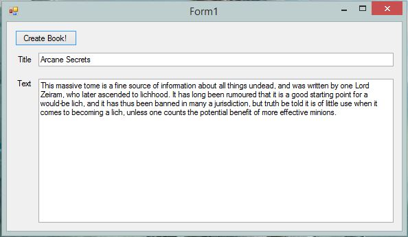

Connor Wilby's Portfolio
About Me
|
I am a graduate games programmer, primarily working in unity, but with skills in many other areas. Here you can see some examples of my work. Three years ago I didn't know how to program at all, and I have seen myself grow so much over the course of my degree. I want to continue to nurture and develop that growth and see just how far I can go. |
Name: Connor WilbyAge: 23Location: Ipswich, UK |
Projects
Gemini

Gemini is a mobile game made for my third year group project, along with Caitlin White, Jamie Chandler and Jordan Marks. The nebula background used on this website was created by Caitlin for this project. This was my first experience making a large game as my previous group projects only lasted one semester, this one spanned two.
Skills Involved:
- Unity 2D C#
- Long-term project
- Mobile game
- Saving and loading JSON files
Dragons Initiative

The Dragon's initiative is a club that I co-founded to provide a place to play D&D. It currently hosts six games of D&D over the course of four weeks, two of which I DM and another two of which I play in. The club is based in Gainsborough community library.
DI was founded off the back of a previous club named M.I.A, which had provided a similar space for wargames and tabletop RPG's, however it eventually became unsustainable. Leigh Woolard and I co-founded DI using our experience as committee members at M.I.A to avoid the same mistakes the old club was plagued by.
I enjoy the responsibility of running the club, arranging for new games to take place, as well as open days and my own responsibilities as a GM.
I enjoy creating assets for these games, using photoshop to create maps and magic item cards and even some programs to help me while I GM. You can find a few of the more polished ones on my portfolio. D&D gives me a feel for the design side of games, crafting player experience and combining all of my individual skills into something cohesive and then sharing it with others.
Skills Involved:
Mythos App
Mythos is a niche wargame successfully kickstarted by paranoid miniatures in 2017
Stuart Phillips is a member of The Dragons Initiative and one of the designers of Mythos. I offered to create an app for Mythos that would allow players to build their parties, keep a track of the game state and otherwise replace the physical cards that the game normally requires. Though this was a part of a university module, I was very happy to create an app that would further expand my skills and also to work on a more utilitarian app, instead of a game.
Skills Involved:
- JSON storage of data
- Unity C#
- Working with professionals outside of a learning environment
- Constantly iterating based off user and designer feedback
Final Project
My final project for university is a guard AI for a 3D environment, using behavior trees to make intelligent decisions. It has been a long learning process, constantly iterating on the principle. More than anything, it has taught me the need to research early on to avoid mistakes, and that there is no substitute for a solid plan.
Skills Involved:
- Behavior tree game AI
- Unity3D C#
- Unity navmesh
RippleFootie

RippleFootie was a group project where the brief for it was provided by Ubisoft. I worked with Heather Bishop and Henry Smith to create a physics based game. I am most proud of the sine wave that moves, as each of the vertices's for the object has to be moved each frame, creating a dynamic and interesting environment to play the game and adding a massive element of randomness and fun.
Skills Involved:
- Unity2D C#
- How to change scenes in Unity
- How to use masks (to create the scoring background)
Website:
Building this website has taught me how to use HTML5 and CSS. It was a fun experience and I found that I quite enjoyed the process.
It has also taught me that there is a lot about web design that I don't understand yet, and it will be fun to continually tweak and mess with this site over time as I have new projects to add to it and more experience to show.
Skills Involved:
- HTML5
- CSS
Random Book Generator
This random generator came about because wanted to practice using .net, and because I had seen a Reddit post that showed a fairly complicated table for randomly generating books for D&D. Though not one of my more complicated projects, it is noteworthy because I was so enthusiastic about it, and it took me less than an hour to complete. When I have the time, I would like to create a similar app that uses the random name tables in "Xanathar's Guide to Everything" to generate names based on those tables, ideally taking from external files so they can be edited and added to.
Skills Involved:
- .net framework
- C#
Contact Details
Email: connor.j.w.wilby@gmail.com
Linkedin: www.linkedin.com/in/connor-wilby
Download CV: Connor's CV